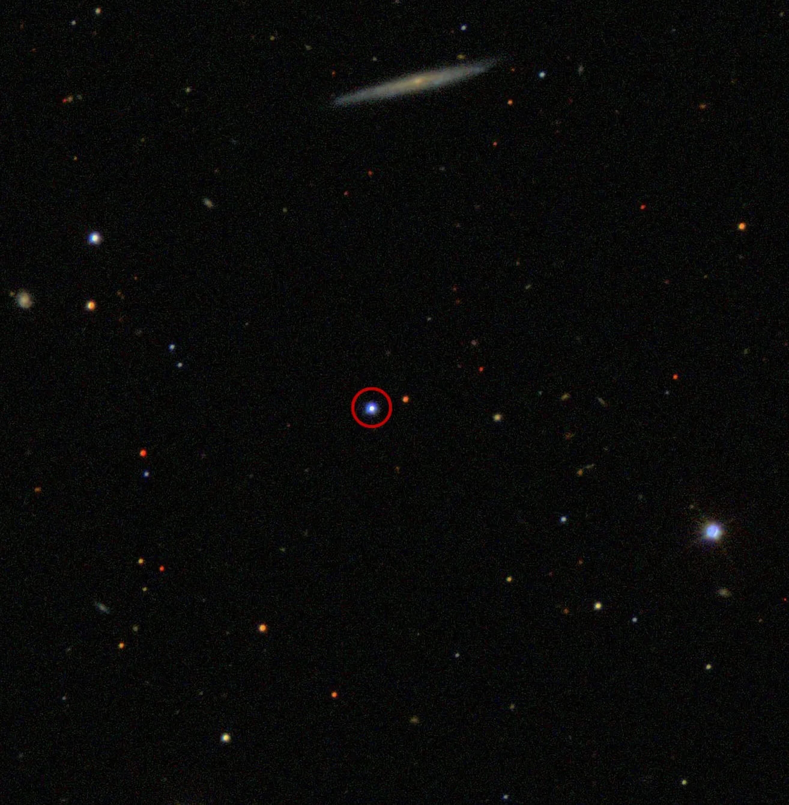

TON 618

Overview
TON 618 is one of the most massive black holes ever found, with about 66 billion times the mass of the Sun. It powers a quasar, an extremely bright object that shines when huge amounts of gas fall toward a black hole and heat up. TON 618 is so far away that its light has traveled for more than 10 billion years to reach us. That means we are seeing it as it looked when the universe was young.
Interesting Facts
- The name TON 618 comes from the Tonantzintla Observatory in Mexico, where it was first cataloged in 1957.
- Because its light took over 10 billion years to reach Earth, looking at TON 618 is like looking back in time.
Quick Facts
- Type: Ultramassive black hole (powers a quasar)
- Distance from Earth: More than 10 billion light-years
- Size: About 66 billion times the mass of the Sun
- Discovery: Cataloged in 1957 as a faint blue star; later identified as a quasar